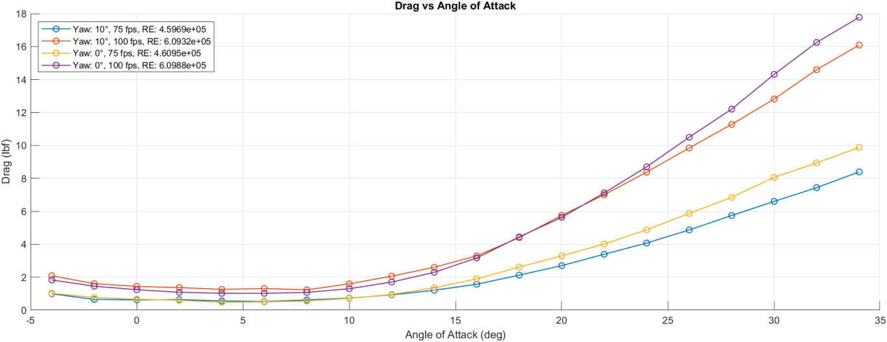
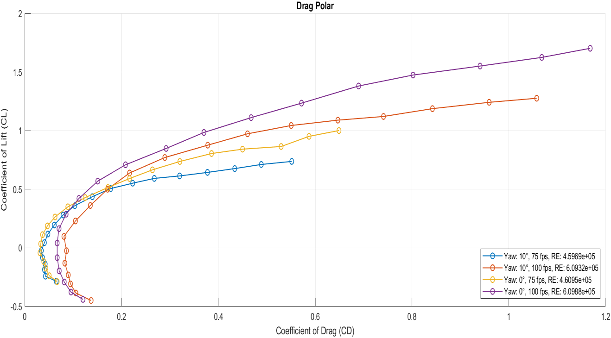

Approach & Key Equations
The model was tested at four conditions — 75 fps and 100 fps, at 0° and 10° yaw — while angle of attack swept from −4° to 34° in 2° steps. Raw balance outputs were corrected using the image-invert tare procedure, then non-dimensionalized by dynamic pressure q and reference area Sw:
CL = Lift / (q·Sw) CD = Drag / (q·Sw) Cm = Pitch / (q·Sw·cw)
A quadratic curve fit to the drag polar (CD = CD0 + K·CL²) extracted the parasitic drag and induced drag factor K for each condition. Reynolds numbers were computed from the “Reynolds Number per ft” channel in the raw tunnel data.


